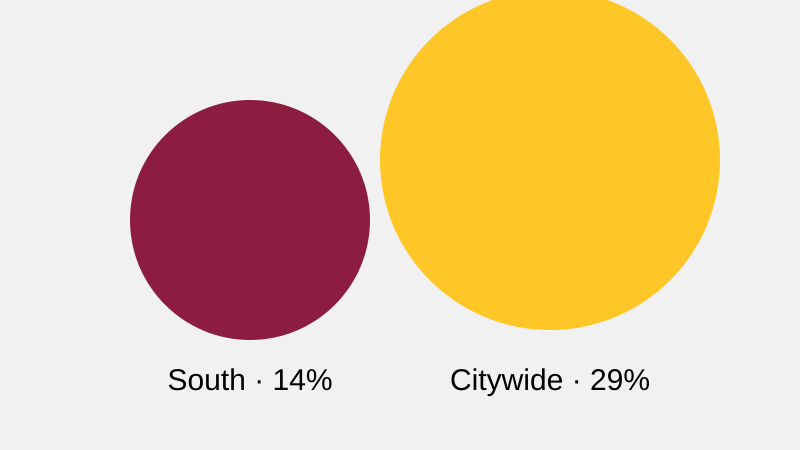

Tree canopy

Cooling-center visits
| Location | June | July | August |
|---|---|---|---|
| North Library | 318 | 441 | 390 |
| South Center | 507 | 682 | 615 |
| West Hall | 276 | 398 | 351 |
Instructional sample data created for semantic repair practice; not for external use.
Repair practice

| Location | June | July | August |
|---|---|---|---|
| North Library | 318 | 441 | 390 |
| South Center | 507 | 682 | 615 |
| West Hall | 276 | 398 | 351 |
Instructional sample data created for semantic repair practice; not for external use.